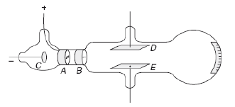
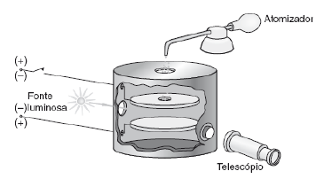

Veja a PARTE 1 no Instagram
RAIOS CATÓDICOS
Como visto no último post, Faraday utilizou o voltâmetro para medir correntes elétricas; utilizaremos esse aparelho para explicar alguns termos novos.
Um voltâmetro de prata funciona aplicando uma corrente em duas placas de cobre mergulhadas em uma solução (também contendo prata), como vimos anteriormente, isso fará com que a corrente flua pelo aparelho, de uma placa à outra, passando pela solução.
Essas placas são a parte do circuito por onde a corrente elétrica entra e sai, partes assim são chamadas de eletrodos. A parte por onde a corrente (convencional) entra, é chamada de ânodo, e a parte por onde ela sai é chamada de cátodo.

Faraday notou que ao colocar eletrodos em lados opostos de um tubo de vidro com pouco ar dentro (vácuo), um arco de luz se formava passando do cátodo para o ânodo. Estes são os raios catódicos.

EXPERIMENTO DE J. PERRIN
Até então não se sabia o que eram os raios catódicos; alguns físicos acreditavam que eram causados por vibrações no éter (uma antiga teoria de como a luz se propagava pelo espaço); outros físicos acreditavam que eram formados por matéria negativamente carregada se movendo a alta velocidade.
Em 1895, J. Perrin[1] recolheu raios catódicos em um eletrômetro (um aparelho usado para medir carga elétrica) e observou que eram realmente carregados com eletricidade negativa.
EXPERIMENTO DE THOMSON
Em 1897, J. J. Thomson usou o seguinte aparelho para medir o valor de $q/m$ dos raios catódicos[2]:

Nesse experimento, o cientista ajustou os valores de um campo magnético $B$ e um campo elétrico $\mathscr{E}$, mutuamente perpendiculares, para que os raios não sofressem deflexão.
Isso o permitiu determinar a velocidade das partículas ($u$) igualando a força magnética à força elétrica: $$F_{mag}=F_{\mathscr{E}} \ \rightarrow \ quB = q\mathscr{E} \ \rightarrow \ u = \frac{\mathscr{E}}{B}$$
Quando um campo magnético uniforme de intensidade $B$ é aplicado perpendicularmente à direção de movimento de partículas carregadas, as partículas passam a se mover em uma trajetória circular. A relação $q/m$ pode ser calculado a partir da segunda lei de Newton: $$F_{mag} = ma_c \ \rightarrow \ quB = m\frac{u^2}{R} \ \rightarrow \ \frac{q}{m} = \frac{u}{RB}$$ $$\frac{q}{m} = \frac{\mathscr{E}}{RB^2}$$ O experimento de Thomson conseguiu medir $e/m$ obtendo o valor de $0.7 × 10^{11} \text{C/kg}$.
Quando Thomson repetiu o experimento usando gases diferentes no interior do tubo e catodos feitos de diferentes metais, obteve o mesmo valor para $e/m$ (dentro do erro experimental esperado), o que o levou a concluir que as mesmas partículas estavam presentes em todas as substâncias. Esses resultados o levaram à conclusão de que essas partículas tinham uma massa aproximadamente 2 000 vezes menor que a do átomo mais leve e eram parte integrante de todos os átomos.
Thomson havia descoberto o elétron.
EXPERIMENTO DE MILLIKAN
Os resultados dos experimentos de Thomson eram uma grande indicação de que todos os elétrons possuíam a mesma carga elétrica negativa $e$.
Em 1909, Millikan mediu o valor dessa carga utilizando o seguinte experimento:

Nesse experimento gotas de óleo eletricamente carregadas são suspensas em um campo elétrico igualando a força elétrica à força gravitacional:$$F_{\mathscr{E}} = F_g \ \rightarrow \ q\mathscr{E} = mg \ \rightarrow \ q = \frac{mg}{\mathscr{E}}$$ Os experimentos mostraram que as cargas sempre ocorriam em múltiplos inteiros de uma carga $e$, cujo valor foi estimado em $e=1.601 × 10^{−19} \text{C}$
FONTES
J. Perrin. (1895). NEW EXPERIMENTS ON THE KATHODE RAYS. read before the Paris Academy of Sciences.
J.J. Thomson. (1897). Cathode Rays. Philosophical Magazine and Journal of Science